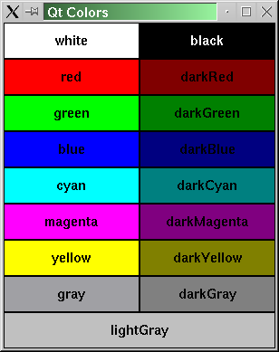

| Home · All Classes · Main Classes · Grouped Classes · Modules · Functions |
The QColor class provides colors based on RGB or HSV values. More...
#include <QColor>
The QColor class provides colors based on RGB or HSV values.
A color is normally specified in terms of RGB (red, green, and blue) components, but it is also possible to specify HSV (hue, saturation, and value) or set a color name (the color name can be any of the SVG 1.0 color names).
QColor's validity (isValid()) indicates whether it is legal at all. For example, a RGB color with RGB values out of range is illegal. For performance reasons, QColor mostly disregards illegal colors. Therefore, the result of using an invalid color is undefined.
There are 20 predefined QColor objects: Qt::white, Qt::black, Qt::red, Qt::darkRed, Qt::green, Qt::darkGreen, Qt::blue, Qt::darkBlue, Qt::cyan, Qt::darkCyan, Qt::magenta, Qt::darkMagenta, Qt::yellow, Qt::darkYellow, Qt::gray, Qt::darkGray, Qt::lightGray, Qt::color0, Qt::color1, and Qt::transparent.

The colors Qt::color0 (zero pixel value) and Qt::color1 (non-zero pixel value) are special colors for drawing in QBitmaps. Painting with Qt::color0 sets the bitmap bits to 0 (transparent, i.e. background), and painting with Qt::color1 sets the bits to 1 (opaque, i.e. foreground).
QColor is platform and device independent. The QColormap class maps the color to the hardware.
A color can be set by passing an RGB string to setNamedColor() (such as "#112233"), or a color name (such as "blue"). The names are taken from the SVG 1.0 color names. To get a lighter or darker color use light() and dark() respectively. Colors can also be set using setRgb() and setHsv(). The color components can be accessed in one go with rgb() and hsv(), or individually with red(), green(), and blue().
Because many people don't know the HSV color model very well, we'll cover it briefly here.
The RGB model is hardware-oriented. Its representation is close to what most monitors show. In contrast, HSV represents color in a way more suited to the human perception of color. For example, the relationships "stronger than", "darker than", and "the opposite of" are easily expressed in HSV but are much harder to express in RGB.
HSV, like RGB, has three components:
Here are some examples: pure red is H=0, S=255, V=255; a dark red, moving slightly towards the magenta, could be H=350 (equivalent to -10), S=255, V=180; a grayish light red could have H about 0 (say 350-359 or 0-10), S about 50-100, and S=255.
Qt returns a hue value of -1 for achromatic colors. If you pass a hue value that is too large, Qt forces it into range. Hue 360 or 720 is treated as 0; hue 540 is treated as 180.
See also QPalette and QApplication::setColorSpec().
The type of color specified, either RGB, HSV or CMYK.
| Constant | Value |
|---|---|
| QColor::Rgb | 1 |
| QColor::Hsv | 2 |
| QColor::Cmyk | 3 |
| QColor::Invalid | 0 |
Constructs an invalid color with the RGB value (0, 0, 0). An invalid color is a color that is not properly set up for the underlying window system.
The alpha value of an invalid color is unspecified.
See also isValid().
Constructs a color with the RGB value r, g, b, and the alpha-channel (transparency) value of a, in the same way as setRgb().
The color is left invalid if any of the arguments are invalid.
See also setRgba().
Constructs a color with the value color. The alpha component is ignored and set to solid.
See also fromRgb().
Constructs a named color in the same way as setNamedColor() using the name given.
The color is left invalid if the name cannot be parsed.
See also setNamedColor().
Constructs a named color in the same way as setNamedColor() using the name given.
The color is left invalid if the name cannot be parsed.
See also setNamedColor().
Constructs a color that is a copy of color.
Constructs a new color with a color value of color.
Returns the alpha color component of this color.
See also setAlpha(), alphaF(), red(), green(), and blue().
Returns the alpha color component of this color.
See also setAlphaF(), alpha(), redF(), greenF(), and blueF().
Returns the black color component of this color.
See also blackF(), cyan(), magenta(), yellow(), and alpha().
Returns the black color component of this color.
See also black(), cyanF(), magentaF(), yellowF(), and alphaF().
Returns the blue color component of this color.
See also setBlue(), blueF(), red(), green(), and alpha().
Returns the blue color component of this color.
See also setBlueF(), blue(), redF(), greenF(), and alphaF().
Returns a QStringList containing the color names Qt knows about.
Converts the color to the color format specified by colorSpec
Returns the cyan color component of this color.
See also cyanF(), black(), magenta(), yellow(), and alpha().
Returns the cyan color component of this color.
See also cyan(), blackF(), magentaF(), yellowF(), and alphaF().
Returns a darker (or lighter) color, but does not change this object.
Returns a darker color if factor is greater than 100. Setting factor to 300 returns a color that has one-third the brightness.
Returns a lighter color if factor is less than 100. We recommend using light() for this purpose. If factor is 0 or negative, the return value is unspecified.
(This function converts the current RGB color to HSV, divides V by factor and converts back to RGB.)
See also light().
Static convenience function that returns a QColor constructed from the CMYK color values, c (cyan), m (magenta), y (yellow), k (black), and a (alpha-channel, i.e. transparency).
All the values must be in the range 0-255.
See also toCmyk(), fromHsv(), and fromRgb().
Static convenience function that returns a QColor constructed from the CMYK color values, c (cyan), m (magenta), y (yellow), k (black), and a (alpha-channel, i.e. transparency).
All the values must be in the range 0.0-1.0.
See also toCmyk(), fromHsv(), and fromRgb().
Static convenience function that returns a QColor constructed from the HSV color values, h (hue), s (saturation), v (value), and a (alpha-channel, i.e. transparency).
The value of s, v, and a must all be in the range 0-255; the value of h must be in the range 0-360.
See also toHsv(), fromCmyk(), and fromRgb().
Static convenience function that returns a QColor constructed from the HSV color values, h (hue), s (saturation), v (value), and a (alpha-channel, i.e. transparency).
The value of h, s and v must all be in the range 0.0-1.0.
See also toHsv(), fromCmyk(), and fromRgb().
Creates a color from the argb value rgb.
The alpha component of rgb is ignored. For conversion from an RGBA value use fromRgba().
See also fromRgba().
This is an overloaded member function, provided for convenience. It behaves essentially like the above function.
Static convenience function that returns a QColor constructed from the RGB color values, r (red), g (green), b (blue), and a (alpha-channel, i.e. transparency).
All the values must be in the range 0-255.
See also toRgb(), fromCmyk(), and fromHsv().
Static convenience function that returns a QColor constructed from the RGB color values, r (red), g (green), b (blue), and a (alpha-channel, i.e. transparency).
All the values must be in the range 0.0-1.0.
See also toRgb(), fromCmyk(), and fromHsv().
Creates a color from the rgba value rgba.
See also fromRgb().
Sets the contents pointed to by c, m, y, k, and a, to the cyan, magenta, yellow, black, and alpha-channel (transparency) components of the CMYK value.
See also setCmyk(), getRgb(), and getHsv().
Sets the contents pointed to by c, m, y, k, and a, to the cyan, magenta, yellow, black, and alpha-channel (transparency) components of the CMYK value.
See also setCmyk(), getRgb(), and getHsv().
Returns the current RGB value as HSV. The contents of the h, s, and v pointers are set to the HSV values, and the contents of a is set to the alpha-channel (transparency) value. If any of the pointers are null, the function does nothing.
The hue (which h points to) is set to -1 if the color is achromatic.
Warning: Colors are stored internally as RGB values, so getHSv() may return slightly different values to those set by setHsv().
Returns the current RGB value as HSV. The contents of the h, s, and v pointers are set to the HSV values, and the contents of a is set to the alpha-channel (transparency) value. If any of the pointers are null, the function does nothing.
Sets the contents pointed to by r, g, b, and a, to the red, green, blue, and alpha-channel (transparency) components of the RGB value.
See also rgb(), setRgb(), and getHsv().
Sets the contents pointed to by r, g, b, and a, to the red, green, blue, and alpha-channel (transparency) components of the RGB value.
See also rgb(), setRgb(), and getHsv().
Returns the green color component of this color.
See also setGreen(), greenF(), red(), blue(), and alpha().
Returns the green color component of this color.
See also setGreenF(), green(), redF(), blueF(), and alphaF().
Returns the hue color component of this color.
See also hueF(), saturation(), value(), and alpha().
Returns the hue color component of this color.
See also hue(), saturationF(), valueF(), and alphaF().
Returns true if the color is valid; otherwise returns false.
If the color was constructed using the default constructor, false is returned.
Returns a lighter (or darker) color, but does not change this object.
Returns a lighter color if factor is greater than 100. Setting factor to 150 returns a color that is 50% brighter.
Returns a darker color if factor is less than 100. We recommend using dark() for this purpose. If factor is 0 or negative, the return value is unspecified.
(This function converts the current RGB color to HSV, multiplies V by factor, and converts the result back to RGB.)
See also dark().
Returns the magenta color component of this color.
See also magentaF(), cyan(), black(), yellow(), and alpha().
Returns the magenta color component of this color.
See also magenta(), cyanF(), blackF(), yellowF(), and alphaF().
Returns the name of the color in the format "#AARRGGBB"; i.e. a "#" character followed by three two-digit hexadecimal numbers.
See also setNamedColor().
Returns the red color component of this color.
See also setRed(), redF(), green(), blue(), and alpha().
Returns the red color component of this color.
See also setRedF(), red(), greenF(), blueF(), and alphaF().
Returns the RGB value of the color. The alpha is stripped for compatibility.
The return type QRgb is equivalent to unsigned int.
For an invalid color, the alpha value of the returned color is unspecified.
See also setRgb(), getHsv(), qRed(), qBlue(), qGreen(), and isValid().
Returns the RGB value of the color. Note that unlike rgb(), the alpha is not stripped.
The return type QRgb is equivalent to unsigned int.
For an invalid color, the alpha value of the returned color is unspecified.
See also setRgb(), setRgba(), getHsv(), qRed(), qBlue(), qGreen(), and isValid().
Returns the saturation color component of this color.
See also saturationF(), hue(), value(), and alpha().
Returns the saturation color component of this color.
See also saturation(), hueF(), valueF(), and alphaF().
Sets the alpha of this color to alpha. Integer alpha is specified in the range 0-255.
See also alpha().
Sets the alpha of this color to alpha. Qreal alpha is specified in the range 0-1.
See also alphaF().
Sets the blue color component of this color to blue. Int components are specified in the range 0-255.
See also blue().
Sets the blue color component of this color to blue. Float components are specified in the range 0-1.
See also blueF().
Sets the color to CMYK values, c (cyan), m (magenta), y (yellow), k (black), and a (alpha-channel, i.e. transparency).
All the values must be in the range 0-255.
See also getCmyk(), setRgb(), and setHsv().
Sets the color to CMYK values, c (cyan), m (magenta), y (yellow), k (black), and a (alpha-channel, i.e. transparency).
All the values must be in the range 0.0-1.0.
See also getCmyk(), setRgb(), and setHsv().
Sets the green color component of this color to green. Int components are specified in the range 0-255.
See also green().
Sets the green color component of this color to green. Float components are specified in the range 0-1.
See also greenF().
Sets a HSV color value; h is the hue, s is the saturation, v is the value and a is the alpha component of the HSV color.
If s, v or a are not in the range 0 to 255, or h is < -1, the color is not changed.
See also hsv(), getHsv(), and setRgb().
The value of h, s, v, and a must all be in the range 0.0-1.0.
Sets the RGB value to name, which may be in one of these formats:
The color is invalid if name cannot be parsed.
Sets the red color component of this color to red. Int components are specified in the range 0-255.
See also red().
Sets the red color component of this color to red. Float components are specified in the range 0-1.
See also redF().
Sets the RGB value to r, g, b and the alpha value to a. The arguments, r, g, b and a must all be in the range 0 to 255. The color becomes invalid if any of them are outside the legal range.
This is an overloaded member function, provided for convenience. It behaves essentially like the above function.
Sets the RGB value to rgb, ignoring the alpha.
The type QRgb is equivalent to unsigned int.
Sets the color channels of this color to r (red), g (green), b (blue) and a (alpha, transparency).
All values must be in the range 0.0-1.0.
Sets the RGBA value to rgba. Note that unlike setRgb(QRgb rgb), this function does not ignore the alpha.
The type QRgb is equivalent to unsigned int.
See also rgba().
Returns how the color was specified.
Returns a CMYK QColor based on this color.
See also fromCmyk(), toHsv(), and toRgb().
Returns an HSV QColor based on this color.
See also fromHsv(), toCmyk(), and toRgb().
Returns an RGB QColor based on this color.
See also fromRgb(), toCmyk(), and toHsv().
Returns the value color component of this color.
See also valueF(), hue(), saturation(), and alpha().
Returns the value color component of this color.
See also value(), hueF(), saturationF(), and alphaF().
Returns the yellow color component of this color.
See also yellowF(), cyan(), magenta(), black(), and alpha().
Returns the yellow color component of this color.
See also yellow(), cyanF(), magentaF(), blackF(), and alphaF().
Returns the color as a QVariant
Returns true if this color has a different RGB value from the color color; otherwise returns false.
Assigns a copy of the color color to this color, and returns a reference to it.
This is an overloaded member function, provided for convenience. It behaves essentially like the above function.
Assigns a copy of the color and returns a reference to this color.
Returns true if this color has the same RGB value as the color color; otherwise returns false.
Returns the alpha component of the RGBA quadruplet rgba.
Returns the blue component of the RGBA quadruplet rgb.
See also qRgb() and QColor::blue().
Returns a gray value (0 to 255) from the (r, g, b) triplet.
The gray value is calculated using the formula (r*11 + g*16 + b*5)/32.
This is an overloaded member function, provided for convenience. It behaves essentially like the above function.
Returns a gray value (0 to 255) from the given RGB triplet rgb.
Returns the green component of the RGBA quadruplet rgb.
See also qRgb() and QColor::green().
Returns the red component of the RGBA quadruplet rgb.
See also qRgb() and QColor::red().
Returns the RGB triplet (r, g, b).
The return type QRgb is equivalent to unsigned int.
See also qRgba(), qRed(), qGreen(), and qBlue().
Returns the RGBA quadruplet (r, g, b, a).
The return type QRgba is equivalent to unsigned int.
See also qRgb(), qRed(), qGreen(), and qBlue().
This is an overloaded member function, provided for convenience. It behaves essentially like the above function.
Writes the color to the stream.
See also Format of the QDataStream operators.
This is an overloaded member function, provided for convenience. It behaves essentially like the above function.
Reads the color from the stream.
See also Format of the QDataStream operators.
| Copyright © 2005 Trolltech | Trademarks | Qt 4.0.1 |